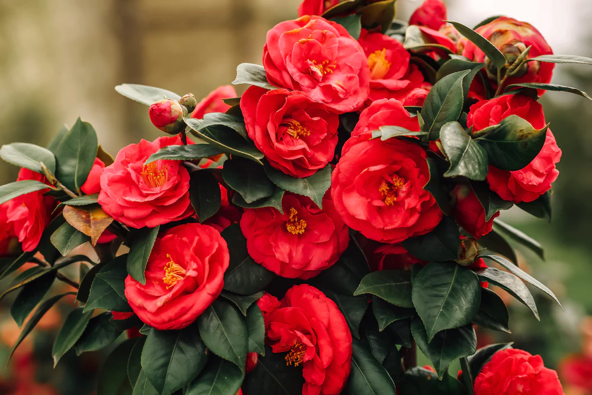

Camellia
Camellia is a genus of flowering plants in the family Theaceae, native to eastern and southern Asia. These plants are prized for their beautiful flowers, glossy foliage, and adaptability to various growing conditions. Camellias are commonly grown as ornamental plants in gardens, and they come in a wide range of cultivars and species.
Types of Camellias:
- Camellia japonica: This is the most widely grown species of camellia. It produces large, showy flowers in shades of red, pink, white, and sometimes yellow. There are thousands of cultivars within this species, varying in flower color, form, and size.
- Camellia sasanqua: This species is known for its smaller flowers and more compact growth habit compared to Camellia japonica. Sasanqua camellias typically bloom in the fall, and their flowers are often fragrant. They come in various colors ranging from white to pink to red.
- Camellia reticulata: These camellias produce some of the largest flowers within the genus. The flowers can be up to 6-8 inches in diameter and come in a variety of colors and patterns. Reticulata camellias are often sought after for their striking appearance.
- Planting Procedure:
- Spring or Fall: Plant camellias in spring or fall when the weather is cool and the soil is moist. Avoid planting during extreme heat or cold.
- Sunlight: Camellias prefer partial shade to filtered sunlight. Plant them in a location where they receive morning sun and afternoon shade, especially in warmer climates.
- Soil: Camellias thrive in well-drained, acidic soil rich in organic matter. They prefer soil with a pH level between 5.0 and 6.5.
Weather in Kathmandu
Temperature: °C
Humidity: %
Condition:
Date & Time: